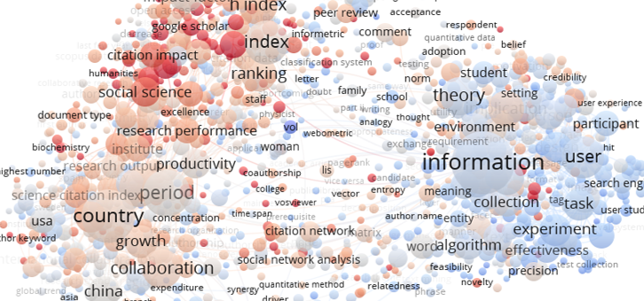
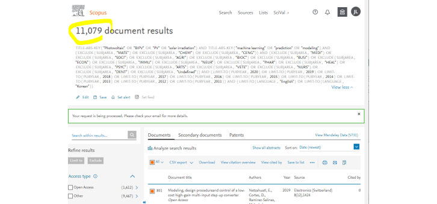
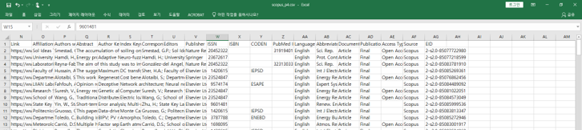
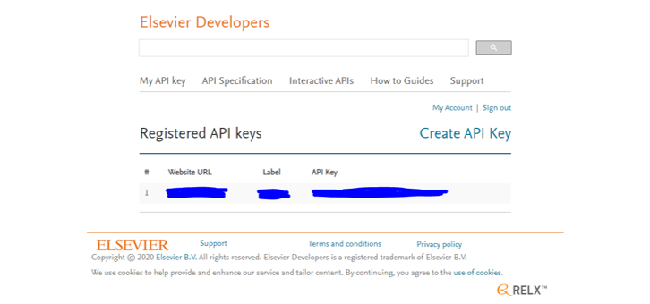
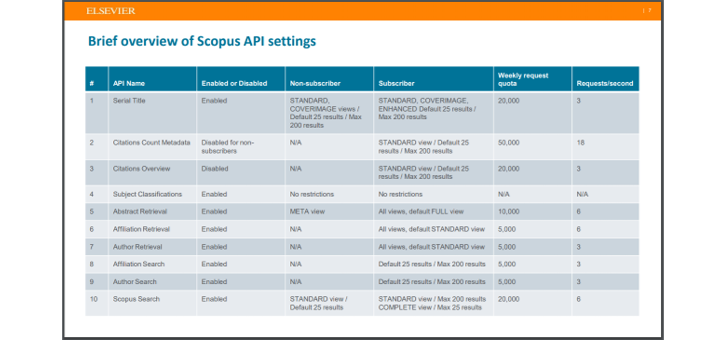
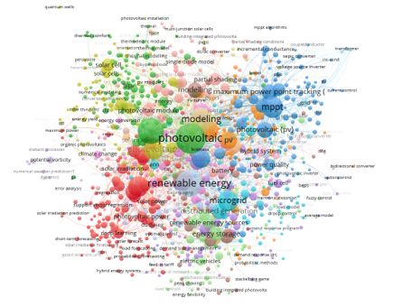
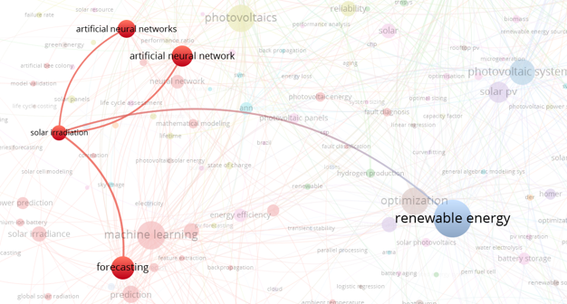
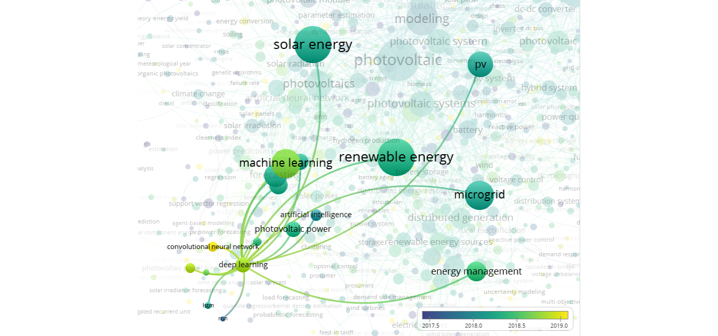
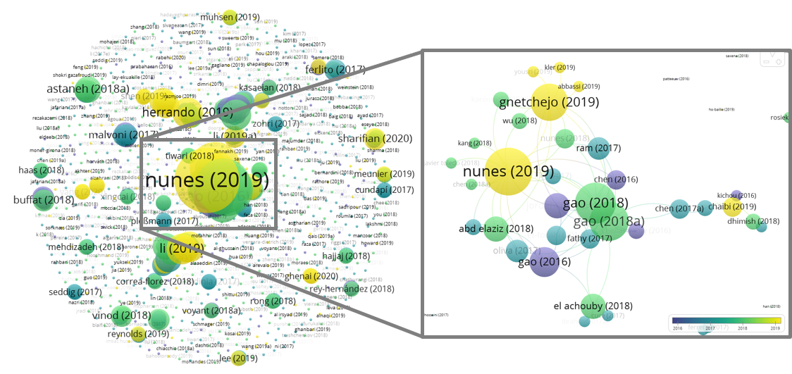

Contributor
김승욱님, Bert님
References
1. Visualizer: VOSviewer
- 논문 여러편을 읽고 행간을 파악해서 연구의 흐름을 인지하는 일은 쉽지 않습니다.
- 익숙한 분야가 아니라면 일단 단어조차 낯선데,
- 뭐가 중요하고 중요하지 않은지 알기 힘든데다
- 이 연구와 다른 연구가 어떻게 연결돼있는지 알기 어렵죠.
- 어설픈 구글링으로 찾아 한참 읽고보니 시간낭비인 경우도 많습니다.
- VOSviewer는 Citation network Visualizer입니다.
- 논문간의 인용관계를 보여줄 뿐 아니라
- 논문의 키워드 빈도에 기반해서 어떤 키워드끼리 연결돼있는지 알려줍니다.

- Web of Science, Scopus를 비롯한 논문 DB포털과 더불어 EndNote, RefWorks, RIS파일과 같은 Reference manager file들을 읽어오기 때문에 논문을 읽으시는 분이라면 별다른 심리적 장벽이 없을 것입니다.
- 본 글에선 Scopus에서 citation 정보를 출력해주지 않아 해결한 과정에 집중합니다.
2. Data Crowler: Scopus
pybliometrics: Python-based API-Wrapper to access Scopus
Elsevier Developers
What are Scopus APIs and how are these used?
- Scopus에 키워드를 넣고 년도, 분야를 설정했더니 1만개가 넘는 결과가 나왔습니다.

- 이 많은 논문을 일일이 볼 생각은 애초부터 없었습니다.
- VOSviewer의 힘을 빌려 맥락을 파악합시다.
- VOSviewer 매뉴얼에서는 Download를 하지 말고 CSV export를 하랍니다.
- Scopus에서는 한번에 200개까지만 받으면 초록도 포함해준다고 합니다.

- 알고보니 인용정보는 맨 우측,
EID를 통해 각 논문의 세부 정보에 액세스해야 합니다.- Python에서는 Scopus API wrapper인 pybliometrics사용을 권장한답니다.
- 설치는
pip install pybliometrics로 간단히 되는데, 계정을 만들 차례입니다.

- Elsevier Developers에 가서 Create API Key를 합니다.
- 제 개인 scopus 계정이지만, Website URL은 회사 홈페이지를 적었습니다.
- Label에는 제 이름을 적었고 (혹 문제가 되면 교체할겁니다)
- 생성된 API Key를 모처에 잘 저장해 두었습니다.
- 아까의 검색창에서 검색결과 전체를 다운로드 받습니다.
- 준비가 되면 메일로 보내준다고 메일 주소를 적으라고 합니다.
- 제 경우는 20분여만에 메일로 링크를 받았습니다.
- 그러나 작업별로 제한이 걸려 있습니다. 공식문서에 따르면 초록 가져오기는 주당 1만건으로 제한된다고 하니 참고합시다.

3. Linker: Web of Science format
- 애초의 목적인 Citation Network를 만들려면 파일 형식을 맞춰야 합니다.
- 30여분간의 구글링으로는 Scopus 출력 .csv의 Network 형식을 찾지 못했습니다.
- 김승욱님의 도움으로 Web of Science 형식을 입수했습니다.
- Scopus에서 도출한
.csv파일 정보를 이용해 Web of Science 형식의.txt파일을 만듭시다.- 여기에 맞춰 변환되도록 컨버터를 만들었습니다.
- 제한된 환경의 테스트로 인해 범용성은 충분히 확보하지 못했을 수 있습니다.
- 특히 주요 서지정보와 인용정보 외에는
None처리한 것들이 있으므로 사용시 주의해야 합니다.
- 데이터 다운로드와 변환 속도는 분당 40편 정도가 되는 것 같습니다.
- 1만편 변환에 4시간 정도가 걸리는 것 같네요.
- 글을 쓰는 이 시점에서 2시간 정도가 걸렸는데, 5600편이 변환됐습니다.
4. Data Analysis
- 아직 덜 익었지만 점검을 겸해서 들여다보도록 하겠습니다.
- 먼저, 키워드별 분류입니다.

- 일사량(solar irradiation)이라는 키워드만 뽑아보겠습니다.
- forecasting이라는 키워드와 붙은걸 보니 예측 관련 연구를 주로 하나봅니다.
- …network와 …networks가 둘 다 보입니다. 정리를 해야겠습니다.

- 이번엔 딥러닝을 살펴보겠습니다.
- 최근들어 CNN이 도입된 것 같습니다.
- RNN과 LSTM은 3년 전에 들어오고 논문이 없는걸까요. 잘 안맞은걸까요?

- 어떤 논문이 많이 인용됐는지 한번 보겠습니다.
- 한가운데 nunes라는 이름이 큼직하게 보입니다.
- 확대를 해보니 nunes, gao, chen이 반복해서 보입니다. 같은 그룹인걸까요?

- 데이터 변환이 끝나면 키워드를 정리하고 나서 다시 그려봐야 할 것 같습니다.
- 약간의 손은 가겠지만 익숙하지 않은 분야를 파악하는데는 확실히 도움이 되네요.
- 의미있는 데이터를 도출하려면 VOSviewer의 메트릭을 정확히 알아야겠습니다.